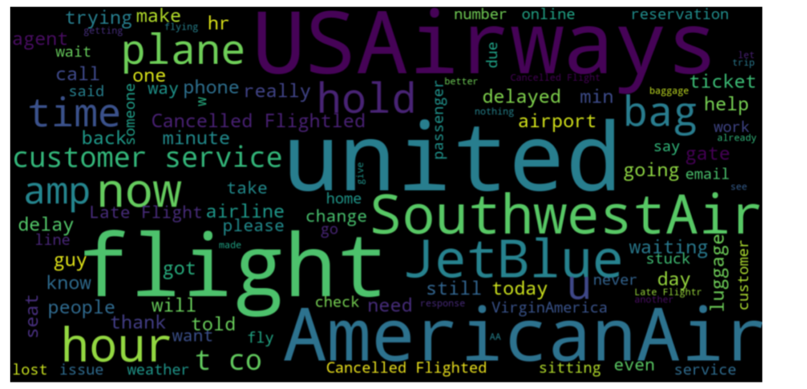

Twitter Sentiment Analysis - US Airlines

View code on github
Introduction
Social platforms like facebook, twitter etc. plays an important role in modern era. People share their opinion, views, happiness, anger, frustration over these social platforms. Analyzing the sentiment from these social platform data can provide an insight to the current trend, emerging issues etc.
Analyzing the sentiment manually and tagging them as either positive, negative or neutral – is next to impossible. Machine Learning can help to address this problem. Data from social platforms can be gathered, processed and sentimental analysis can be done using Machine Learning.
Big businesses are putting lot of importance on sentimental analysis using Machine Learning now a days. They can find out how satisfied users are about a new product, are there any issues or pinpoint with customer care service etc. And then address those issues to improve customer satisfaction.
The aim of this project to carry out sentimental analysis of twitter data from February 2015 related travelers’ tweets about their recent travel in six major US airlines. This will reveal the major negative points that travelers are not happy about, most frequently used positive words on air travel experience, airlines that people are happy about etc.
Data Used
This project is using data from social networking domain. This dataset contains tweets from travelers on six major US airlines. This dataset was scrapped from February 2015. Travelers were asked to classify their tweets and reason for their negative sentiment if any. It contains 14640 observations with 15 attributes.
• tweet_id • airline_sentiment • airline_sentiment_confidence • negativereason • negativereason_confidence • airline • airline_sentiment_gold • name • negativereason_gold • retweet_count • text • tweet_coord • tweet_created • tweet_location • user_timezone
- Dataset: Twitter Airline Data
Technology Used
- Python3
- Jupyter Notebook on Anaconda
Proposal
In modern era, social networking plays an important part in everybody’s life. People express their views -anger or happiness in social networking sites. Analyzing these social networking sites will provide us trending topics, current issues, good things going around the society that people are happy about.
Analysing twitter data from air travellers can reveal several key information like: • Are most of travelers happy about their recent experience? • What is the most trending US-airlines in twitter? • What airline has most negative tweets? • What airline has most positive tweets? • What is the most commonly used positive tweeted word? • What is the most frequently used negative word? • What are major categories of negative tweets?
Machine Learning can help to carry out sentimental analysis of traveller’s twitter data. Other than providing the answers to above questions, it can also build a model that can determine whether a particular text is positive/negative/neutral in nature.
Data
I’m using twitter data scrapped from February 2015. This dataset contains tweets from travellers of six major US airlines. It contains 14640 observations with 15 attributes.
{kind=link}
There is no metadata available for this dataset. Few attributes are straight forward like text, tweet_id, negativereason, airline, retweet_count etc.
Few attributes like tweet_id, tweet_coord etc. irrelevant for my research as it is only used to uniquely identify the tweet.
Data Cleaning
Panda’s profiling report shows that negativereason, negativereason_confidence, airline_sentiment_gold & negativereason_gold contains missing values.
{kind=link}
{kind=link}
I decided to replace these missing values with either blanks or with zeros depending upon the data types of those attributes.
Exploratory Data Analysis
Performed EDA to find out the answers to key questions like • Most tweeted airlines. • Overall airline sentiment • Sentiment at individual airlines level • Most Negative reason counts.
{kind=link}
Looks like most of the United airline was the most talked about airlines by travellers. Whereas Virgin America was the least discussed airlines. This can be because of good or bad reason. We will see that in subsequent analysis.
{kind=link}
From the above plot, we can see that the overall traveller’s sentiment was negative. Let’s now see this breakdown at individual airline levels.
{kind=link}
From above plot, we can see lot of negativity among travellers regrading United Airlines. That’s why it was discussed most in tweets. Whereas for Virgin America, all counts are almost similar, though people tweeted least about this airline.
The next question that comes into our mind what the most common reason are to cause bad travelling experience.
{kind=link}
We can see that Customer Service Issue cause most dissatisfaction among travellers. So, airlines like United can take this feedback and try to improve their customer service.
While analysing the most negative reasons from text, we can see below words:
{kind=link}
We can see some top words used in negative text tweets. United, USAirways, AmericalAirline are appeared most in the negative tweets. Whereas customer service, delayed bag, plane delay etc are the most negative reasons used in the tweets.
{kind=link}
JetBlue, SouthwestAir – appeared in most of the positive tweets. Travellers used word ‘thank’ in most of their positive tweets.

Data Preparation
Converted values into airline_sentiment from 'neutral', 'positive', 'negative' to ‘0’, ‘1’ & ‘2’ for ease of analysis.
Methodology
We have done two things in this project – • Analysed twitter text using SentimentIntensityAnalyzer and re-tag each text as positive, negative or neutral. • Build a classification model to analyse the text and tag it either as positive, negative or neutral.
We are planning to use logistic regression classifier, Random Forest classifier and Naïve Bayes. Logistic Regression classifier will establish the baseline training results and we will compare that with results from Random Forest & Naïve Bayes.
Results
I have used SentimentIntensityAnalyzer to perform sentimental analysis of the text. It returned a compound score. If this score is greater than 0 then the text is positive. If it is less than zero, then the text is negative. Anything else falls under neutral category.
My reclassification of text determines that there is more positive sentiment than negative. Also, it reveals that most of the tweets are either positive or negative. Very less people took neutral approach.
Best Model Selection
Random Forest
{kind=link}
Logistic Regression
{kind=link}
Naive Bayes
{kind=link}
Based on the accuracy score, I have selected Logistic Regression as our best model. We have then tested Random Forest models using our test dataset and calculated accuracy and f1-score. f1-score is a harmonic mean of precision-recall.
Discussion
Airlines can use this sentimental analysis results to improve their service. Airlines those appeared most in negative tweet, can go back and discuss more on top negative reasons. This will provide them an opportunity to fix their problems.
Conclusion
- All the Models performed Pretty Well.
- Results from Test Dataset show that our decision to go with Logistic Regression is correct.
- Trained Random Forest model on Entire Dataset using best Parameter.